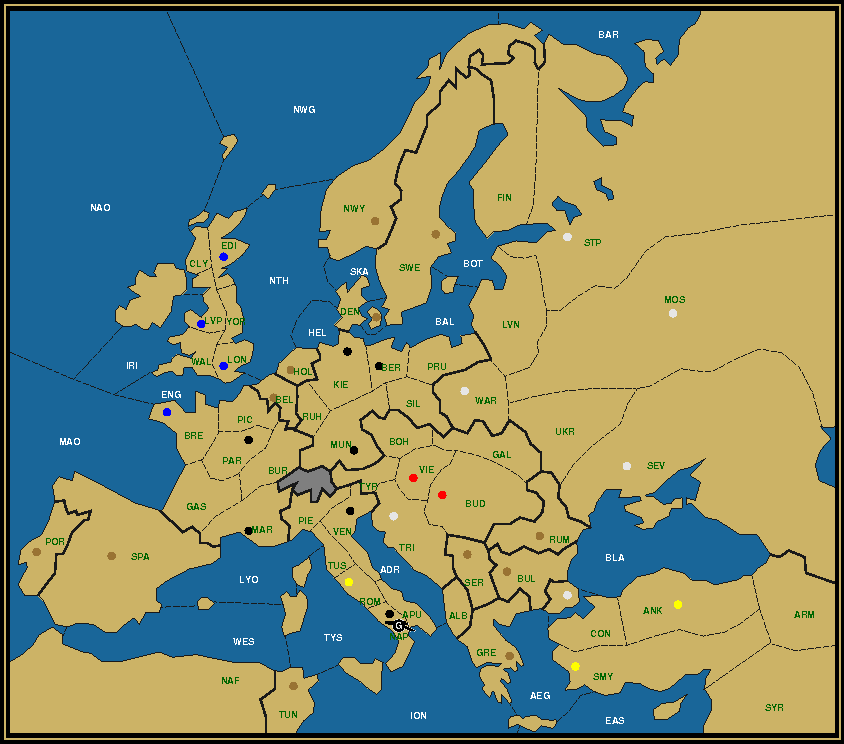
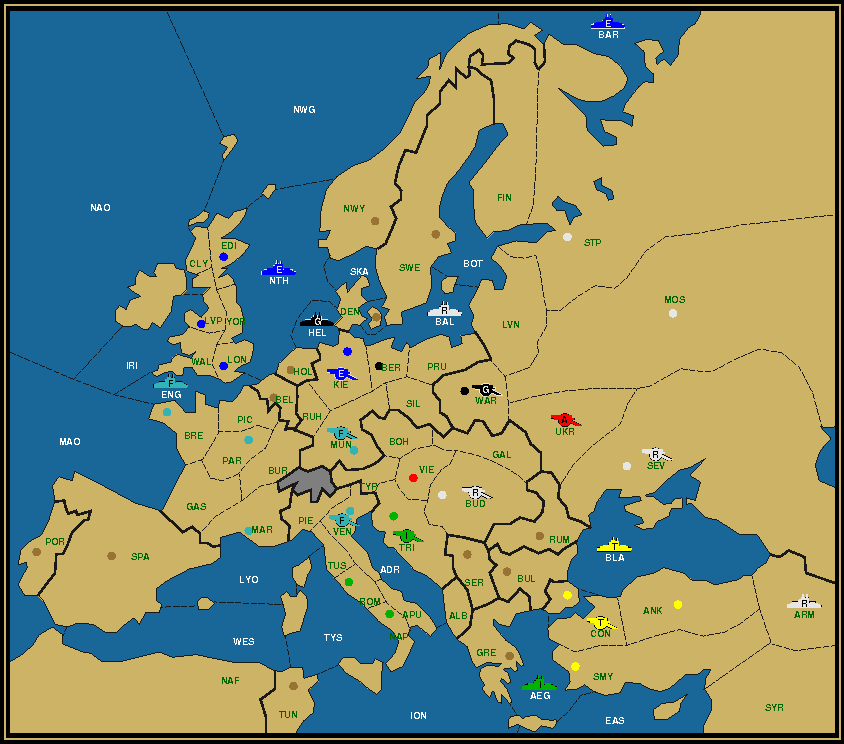
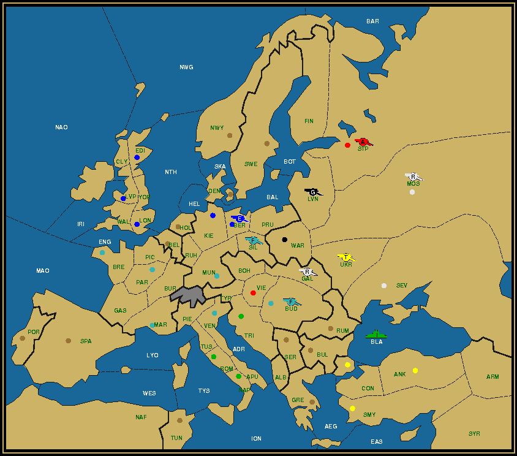
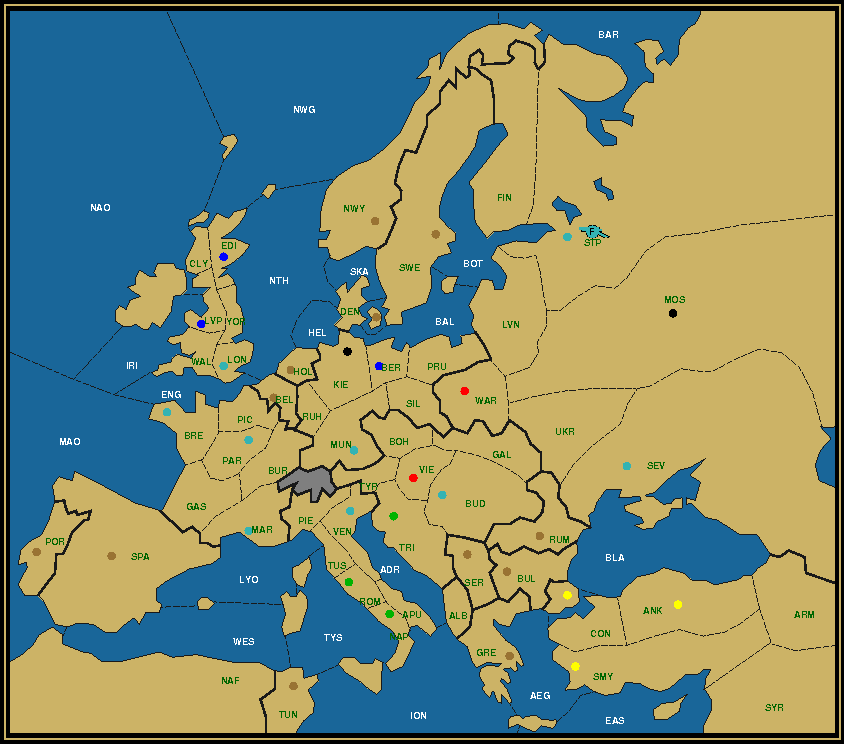

Last Man Standing is a puzzle on the Diplomacy board, whereby the whole board gets reduced to a single unit. This unit must reach its final destination in a mere four game years, without any power capturing any neutral centers and with all powers still possessing at least one unit at the end of the second year. Your goal is to reconstruct the complete game history from the map given. For more details, read the LMS Roll Call. Mission: All Roads Lead to RomeAn odd statement perhaps, since most roads so far led to Berlin. But if we focus on the location of Rome on the Diplomacy board, we can see that there's some truth to the adagio. Or rather, that the reverse, that all roads lead through Rome, is easy to refute. Rome is in the center of this small strip of land called the Italian boot, with the Tyrrhenian Sea on one side and the Adriatic separating it from the Balkans somewhere on the other side. For armies crossing East to West or vice versa it's easier to take the land route through Venice, while fleets will pass underneath through the Ionian. South-North passages will usually completely avoid the Italian boot. Things would improve a little if Rome were to be lumped together with Tuscany, as in the Milan variant. As it stands, Rome in the context of Last Man Standing is perhaps best remembered, or renowned, for the frequent difficulties one has in removing the army starting in it. This has to do in part with the fact that it's one of only four home centers that cannot be captured in the first year, not even with the help of a friendly convoy (involving in this case fleet Naples). The other centers are Liverpool, starting point of the English army that features in so many LMS puzzles, Moscow which we'll analyze below, and Smyrna, another center at the far end of the map. Compared to those Rome is pretty central on the map, and yet it's not easy to reach quickly. This in fact makes it all the more attractive as a final destination point, as units get the time to choose their paths. And that's what we're going to do here. Army Liverpool is prompted to find its way to Rome from Britannia, one of the furthest outposts of the Roman empire, to Rome to perform in the Circus and become the Last Gladiator (I mean Man) Standing. Bread and games!
Austria (1/3) A Ven / Bud Ven Vie England (1/6) A Tri / Edi Kie Lon Lvp Mun Tri France (0/3) Bre Mar Par Italy (1/1) A Apu / Rom Russia (1/7) F Rom / Ber Con Mos Nap Sev Stp War Turkey (0/2) Ank Smy Mission: See Naples and DieThis phrase was popularized by Goethe, and so it's fitting that a German army triumphs in Naples, in the hopes that it dies on the spot and leaves us with an empty board. To get to the exact same end position as shown below, I offer the following riddle. In old Napoli, one was born, one passed through, one returned, but only one survived to tell the tale.  Austria (0/2) Bud Vie England (0/4) Bre Edi Lon Lvp Germany (1/7) A Nap / Ber Kie Mar Mun Nap Par Ven Russia (0/6) Con Mos Sev Stp Tri War Turkey (0/3) Ank Rom Smy Report: Scorched Earth — Army Liverpool to MoscowI'm going to try and prove that it isn't all that difficult to reconstruct the whole game from just the single map that is given. Let's take a close look at it.
The first thing to observe are the paths that the two raiders (the French and English armies) took, prominently marked by the centers they captured on the way. Since it's only 1903, they can have at most captured three each so far, at a distance of at the most two tempi between each. England captured Kiel and Berlin before landing in Warsaw. France captured Munich, Venice and Budapest before Sevastopol. But because there can only be three, we can deduce that Munich was taken by the second French army, A Par, while it was A Mar that took the three other and is still on the board. In principle any of the centers that England captured in Germany could also have been captured by a fleet, but for the French army there can be no doubt, because Budapest can be reached no earlier than 1902 and only by army Marseilles. It could move through Tyrolia instead of Venice, but what would be the point of that? Let us next consider the units that start the furthest away from the destination, because they define in great part how others must move, particularly the snipers sent out to intercept them. In the West we have F Bre and A Lvp (which we already know a lot about), in the South there's A Rom and F Nap. We're not so concerned about F Tri, because chances are good that it will either get dislodged in Fall 1901 or disbanded in Winter 1901, prompted by a loss of centers. We determined that A Lvp will make landfall in Kiel in Fall 1901. For that to happen F Kie must move to Heligoland Bight and one of the English fleets (probably F Lon) to the North Sea. France is gaining centers, so cannot disband its F Bre. Sevastopol is too far away and St. Petersburg can only be reached in Spring 1903, too late to be dislodged, since the (Austrian) attacker would otherwise appear on the After Winter 1903 map. This means that F Bre will need to be swept. This requires two snipers. The two sniper countries are Russia and Germany, since both will be completely eliminated in the end. Germany already has F Kie in the area. A German army would not be of much use, as most territories around the Bight and the North Sea are either a sea or a supply center. The better option is to call in the cavalry, in the form of F Stp/sc, which can reach the North Sea in just 4 turns if moving through the Baltic Sea and Denmark. Combined they can sweep two fleets in 1902 (actually F Bre will attack F Lon in the North Sea first), so the remaining fleet, F Edi should try to reach St. Petersburg, where it will get dislodged by the Austrian army there, as this is still 1902. Let's turn South. There the situation is slightly more complicated. We know that Italy takes Trieste, but we don't know if that will be in 1901 or 1902, as it's the only center that Italy captures. If it's in 1902, then it can disband F Nap, but A Rom will probably still be in Rome after the first year, supporting A Mar into Venice to dislodge F Tri there, or moved up to Piedmont or Tyrolia. If it's in 1901, F Nap will still be around, as it's one of those units that cannot be dislodged in the first year. It would need to move to Trieste or Turkey to find a spot to die. Let's leave this open for a while and check up on Austria and Germany. Austria looks poised to lose centers. The only centers that it keeps in the end are Vienna and St. Petersburg, which it can only take in 1902. To get there, it needs to have at the end of 1901 an army in either Warsaw, Ukraine or Sevastopol. But why would we capture a center when we're trying to lose home centers? That makes the Ukraine the natural choice and favors the strategy of Italy taking Trieste in 1901. Germany has another problem. It's bound to lose all its home centers by 1902, when A Lvp takes Berlin. Without any other centers it would effectively be eliminated at this point, something that the standard LMS rules forbid. To prevent this it should take a center in the first year and lose it in the third year. Why not take it in the second year? Because with only one center after 1901 its remaining unit, F Kie, would have the double task of eliminating the 2 fleets in the West and grab that extra center, something it clearly can't do in a single year. The only centers lost in the third year are those that have units on it on the After Winter 1903 map, Warsaw and Sevastopol. Only Warsaw can be reached by Germany in 1901, so that decides it. Now, Russia can do a similar thing to keep its numbers up. Keeping a maximum number of snipers around can only work to our advantage. We know that Budapest will be taken by France in 1902. Taking it in 1901 with A War accomplishes two things: Russia keeps its full strength and Austria can disband a second unit. The biggest remaining obstacle is to decide how to handle Turkey. As in the original Holmes story we can dedicate two Russian units to the task, F Sev and A Mos. Turkey still has all its home centers, but nothing else in 1903. Should we let it take Sevastopol in 1901? There seems to be no benefit in there. We can as well take out a first Turkish unit in Armenia and move another to Sevastopol in 1902. Or even beyond to Galicia or the Ukraine if convoying to Rumania or Sevastopol first. Or even Moscow, since we know that Russia can retake it in 1903. What about F Nap? If we send it to Turkey, it would be in the Aegean Sea at the end of 1901. Then moving through Constantinople in the Spring, it would burst into the Black Sea in Fall. By strategically placing F Ank on its path and with F Sev in Armenia, it could first take out the Turkish fleet in F02, then A Con in Sevastopol in S03, before being dislodged in turn by A Mar in F03. Immensely effective, all thanks to that Russian fleet in Armenia. Let's try out what we've learned so far.
 There are a few units that haven't been mentioned yet, such as A Ven and A Vie. With the assistance of A Mun, we can set these up to dislodge the raider, A Ven. Note how A Bud moves around Galicia to get to the Ukraine without blocking A War.
 We can use A Ber either to remove A Par in Ber or F Edi in St. Petersburg. Since A Par can move all the way to Moscow and F Edi not, the choice is easy. But can we allow Turkey to take a Russian home center? No, because Russia would only have one left, which wouldn't be sufficient to reduce the unit count to three. Can we avoid it? Yes, by sending A Con to the Ukraine (again). Now, we would like very much to keep F Sev in the game, but in fact the two armies are more useful.
Did you see this coming? Perhaps you were already satisfied obtaining a situation with four units in the last year? That would be close, but no cigar. Note also how the German army manages to end up in Finland, quite an uncommon sight.
Click here for the complete solution. The final stage. Livonia would serve just as well, but given the prominence of the Ukraine in this solution, it's fitting to visit there one more time. Report: The Winter Capital — French Army to St. PetersburgLet's compare the problem map with the final map of the previous solution.  You can observe that the whole Southern half up to the line Brest to Sevastopol is completely identical. This is an indication that for the most part the same approach can be followed there. It might turn out differently, but it's a good starting point. This then already answers the question about which French army is standing in St. Petersburg. Since A Mar reaches Sevastopol in 1903 and Sevastopol is two moves from St. Petersburg with Moscow (a home center) in between, it can be no other than this army. That was easy enough. Now let's look to the top of the map. There are several changes. London became French, Kiel is now German, as is Moscow, Warsaw is Austrian, and St. Petersburg of course is French. Since Kiel did not become English, but instead London became French, the natural conclusion is that A Lvp was disbanded in Winter. But who then took Berlin? It must have been an English fleet, arriving there in 1902 after passing through the Heligoland Bight. This is slightly problematic for F Kie, since it can't take up position in the Bight. Luckily there's also the Skagerrak. The most significant change compared to the Moscow map is that Germany is still in the game, with two centers even. That second center is Moscow, which is on the path from Sevastopol to St. Petersburg, the route that the French army is taking in the final year. Assuming that there will be four units left in the final year (which is generally easier to get to than three), Moscow will be occupied. Moreover Russia will have an army in Livonia, because that's the only place from where it can support the French army first to Moscow and then to St. Petersburg. With Livonia and Moscow already reserved, the fourth unit is going to have to come from Scandinavia or the waters surrounding it. And there's one perfect candidate for that in the form of the English fleet spending the Winter of 1902 in Berlin. Two seasons later it can be in the Gulf of Bothnia, next to St. Petersburg. With the grand strategy decided it's time to take out the board and put down the pieces. The finer details can be taken care of on the way.
I used a small variation for the Italian armies, resulting in A Ven surviving and A Rom being removed. This allows both A Ber and A Vie to simply hold, but in some circumstances this added flexibility would allow to move them over to more desirable positions. Note also that Germany did not capture Warsaw, allowing Russia to build a unit. It's usually advisable to build one, but looking ahead I don't see any good use for this extra unit, so waived the build.
All goes according to plan. A Con could again have moved on to the Ukraine, allowing for a third Russian sniper to remain. But in this case it's possible to clear the task with just two, so why have more? Meanwhile A Mos already took up position in Livonia, ahead of schedule.
F Sev is acting precisely as outlined in the previous solution, where that plan had ultimately been abandoned. A postponed desert tastes double as sweet.
Click here for the complete solution. The end phase had already been spelled out. The Russians will surely know to appreciate the wine that the French army carried along. Mission accompli. Conclusions drawnI have attempted to prove that it's feasible to solve LMS puzzles mostly from the information provided by the final map. It's not completely straightforward, otherwise there would be no challenge. It can get more complicated than this, enticing more mental gymnastics. But basically the techniques outlined here can be reused over and over again. Use them judiciously. I'm adding the games lvp-mos and mar-stp to UKDP. These start off where they ended here, in the Winter of 1904. Hop over and join one to take it further past its logical conclusion.
If you wish to e-mail feedback on this article to the author, and clicking on the envelope above does not work for you, feel free to use the "Dear DP..." mail interface. |